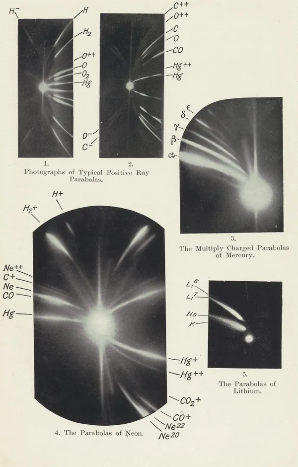
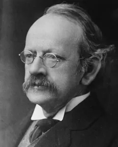
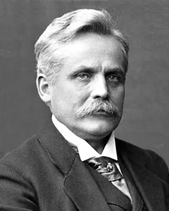

Le origini: raggi catodici, raggi canale, raggi positivi
Prima di misurare masse bisognava capire che cosa vola dentro un tubo a scarica. Tra il 1886 e il 1913 si passa dai bagliori nel vetro agli isotopi.
Il tubo a scarica
Un tubo di vetro con due elettrodi e un gas a pressione molto bassa si illumina quando tra gli elettrodi si applica un'alta tensione. Alla fine dell'Ottocento era lo strumento principale per studiare l'elettricità nei gas. Serve il vuoto perché le particelle non devono urtare di continuo le molecole del gas (capitolo 6).
Raggi catodici: particelle negative (Thomson 1897)
Dal catodo parte qualcosa che fa brillare di verde il vetro e proietta l'ombra di una croce di mica messa sul suo cammino. Secondo il racconto di Thomson, la natura di questi raggi era discussa: per molti fisici inglesi erano particelle cariche, per la maggioranza dei tedeschi una specie di onda.
Nel 1897 Thomson misurò con campi elettrici e magnetici il rapporto fra carica e massa, e/m, delle particelle dei raggi catodici. Il valore non cambiava né con il gas né con il metallo degli elettrodi. Era circa mille volte quello dello ione idrogeno dell'elettrolisi.
Nel 1897 Thomson non poteva ancora dire se la causa fosse una massa piccola o una carica grande. Nella conferenza per il Nobel del 1906 indicò per queste particelle una massa di circa 1/1700 di quella dell'atomo di idrogeno.
Raggi canale: qualcosa va nell'altro verso (Goldstein 1886)
Nel 1886 Goldstein usò un catodo con dei fori. Dietro la placca, dal lato opposto all'anodo, da ogni foro usciva un fascio luminoso sottile e quasi rettilineo. Il colore dipendeva dal gas: giallastro nell'aria, rosa nell'idrogeno.
Poiché attraversavano i «canali» del catodo, Goldstein li chiamò, in via provvisoria, Kanalstrahlen: raggi canale. Il metallo del catodo non cambiava né il colore né lo spettro, che erano quelli del gas. E, a differenza dei raggi catodici, quasi non facevano brillare il vetro.
Wien: deviare i raggi canale (1898)
Per dodici anni i raggi canale non risposero a nessun magnete. Un piccolo magnete tenuto in mano piega subito i raggi catodici, ma Goldstein non riuscì a deviare i raggi canale nemmeno con il più grande elettromagnete del suo istituto. Nel 1898 Wien usò campi magnetici molto più intensi e mostrò che i raggi canale sono particelle con carica positiva.
Campo elettrico e magnetico: misurare q/m
Nell'apparecchio di Wien i raggi passavano per un foro di 2 mm in un catodo di ferro e producevano una macchia luminosa sul vetro in fondo al tubo. Un elettromagnete e due piastre parallele deviavano la macchia e la allungavano in una banda.
I due campi deviano lo stesso ione in modo diverso. Per piccole deviazioni, quella magnetica è proporzionale a q/(m·v) e quella elettrica a q/(m·v²), dove v è la velocità dello ione. Misurando le due deviazioni si ricavano la velocità e il rapporto q/m.
L'idrogeno è lo ione più leggero
Con l'idrogeno, nella parte più deviata della banda, Wien trovò un valore di e/m di circa 7,5·10³ in unità CGS. Lo ione idrogeno dell'elettrolisi ha 10⁴. Per i raggi canale il valore è quindi migliaia di volte più piccolo che per i raggi catodici: le particelle positive sono migliaia di volte più pesanti dell'elettrone.
Più tardi Thomson vide bande separate per l'atomo di idrogeno (10⁴), per la molecola (5·10³) e per l'elio (2,5·10³). L'idrogeno è il capostipite: lo ione più leggero e più deviato.
Thomson e il metodo delle parabole
Campi paralleli: ogni q/m disegna una parabola
Thomson dispone il campo elettrico e quello magnetico paralleli. Il magnete devia lo ione in una direzione, il campo elettrico in quella perpendicolare. Le due deviazioni dipendono dalla velocità in modo diverso (1/v e 1/v²), e questo ha una conseguenza utile.
Ioni con lo stesso q/m ma velocità diverse cadono tutti su una stessa parabola, con il vertice nel punto non deviato. Ioni con q/m diverso disegnano parabole diverse. Non serve scegliere la velocità: la velocità sposta lo ione lungo la curva, non la cambia.
Le parabole di Thomson, passo per passo
Guarda come funziona: premi «Avvia» oppure usa «Passo avanti». I punti sono ioni con energie, e quindi velocità, scelte a caso. Il disegno non rispetta le proporzioni reali: nel neon naturale la massa 22 è molto meno abbondante della 20.
La lastra fotografica come rivelatore
Thomson registrava le parabole su una lastra fotografica. Ogni specie lascia una traccia scura, e la posizione della traccia dà q/m. Una sola fotografia mostra così, in un colpo d'occhio, tutte le specie presenti nel gas.
Gli atomi possono perdere più di un elettrone. Uno ione con due cariche cade dove cadrebbe uno ione di massa dimezzata: il neon con doppia carica compare a metà strada verso l'asse.
Il neon ha due masse (1913)
La parabola a 20 e la «compagna» a 22
Fotografando i gas dell'atmosfera, Thomson trovò per il neon una parabola intensa a massa 20 e, accanto, una linea molto più debole a 22. Nessun elemento noto aveva quella massa. Il biossido di carbonio con doppia carica sarebbe caduto nello stesso punto, ma togliendo il CO₂ dal gas la linea non cambiava.
Anche un composto di neon e idrogeno avrebbe avuto massa 22. Thomson però vide una riga a m/z 11 e un prolungamento della linea 22 verso l'asse: segni di uno ione con doppia carica, e secondo lui questo capita a un atomo, non a una molecola. La sua conclusione fu prudente: o un elemento nuovo, o un gruppo di elementi con proprietà simili accanto al neon.

Isotopi: la parola di Soddy, la prova di Thomson e Aston
Aston, che lavorava al Cavendish Laboratory, provò a separare il gas di massa 22 dal neon. Con carbone di cocco raffreddato in aria liquida la proporzione fra le due righe non cambiò. Con la diffusione attraverso il gambo di una pipa di argilla ottenne invece una piccola variazione, visibile sia nelle righe sia nella densità misurata con una bilancia di quarzo.
Nello stesso periodo Soddy, studiando gli elementi radioattivi, aveva mostrato nel 1913 che atomi di massa diversa possono occupare lo stesso posto della tavola periodica e non sono separabili chimicamente. Oggi si chiamano isotopi. Il neon portava questa idea a un elemento stabile, all'estremo opposto della tavola, e Soddy lo notò.
Il passo successivo, lo spettrografo di Aston del 1919, è il tema del capitolo seguente.
Chi era
Joseph John Thomson (1856-1940)

Nato a Cheetham Hill, vicino a Manchester, studiò a Cambridge e fu Cavendish Professor di fisica sperimentale dal 1884 al 1918. Nel 1897 misurò e/m dei raggi catodici e nel 1913 pubblicò il libro sui raggi positivi. Ricevette il premio Nobel per la fisica nel 1906 per i suoi studi sulla conduzione dell'elettricità nei gas: il premio non riguarda le parabole.
Eugen Goldstein (1850-1930)
Fisico tedesco, nato a Gleiwitz il 5 settembre 1850 e morto il 25 dicembre 1930. Studiò le scariche nei gas e nel 1886 descrisse i raggi canale in una comunicazione all'Accademia delle scienze di Berlino, presentata da Helmholtz. Il nome «Kanalstrahlen» è suo.
Wilhelm Wien (1864-1928)

Fisico tedesco, morto a Monaco di Baviera. Nel 1898 mostrò che i raggi canale sono deviati da campi magnetici ed elettrici. Il premio Nobel per la fisica del 1911, quando lavorava a Würzburg, fu invece per le leggi della radiazione termica, non per i raggi canale.
Perché contava
- Separare gli ioni per q/m con campi elettrici e magnetici è il principio di ogni spettrometro di massa.
- Una sola lastra mostra tutte le specie del gas: è già un'analisi chimica, senza reazioni.
- Il neon estese agli elementi stabili l'idea di Soddy: un elemento può essere una miscela di atomi di massa diversa.
Per capire meglio
Per capire meglio: capitolo 9, risoluzione e potere risolutivo degli analizzatori.
Per capire meglio: capitolo 6, perché serve il vuoto.
Fonti
- storicoGoldstein E. (1886) Über eine noch nicht untersuchte Strahlungsform an der Kathode inducirter Entladungen. Sitzungsber. Königl. Preuss. Akad. Wiss. Berlin (29 luglio 1886), 691-699. Senza DOI: scansione su archive.org.
- articoloThomson J.J. (1897) Cathode Rays. Phil. Mag. (5ª serie) 44, 293-316. doi:10.1080/14786449708621070
- articoloWien W. (1898) Untersuchungen über die electrische Entladung in verdünnten Gasen. Ann. Phys. 301, 440-452. doi:10.1002/andp.18983010618
- articoloThomson J.J. (1913) Bakerian Lecture: Rays of positive electricity. Proc. R. Soc. Lond. A 89, 1-20. doi:10.1098/rspa.1913.0057
- libroThomson J.J. (1913) Rays of Positive Electricity and their Application to Chemical Analyses, Longmans, Green & Co., Londra. archive.org
- storicoThomson J.J. (1906) Carriers of negative electricity, lezione per il premio Nobel per la fisica 1906. nobelprize.org
- storicoSoddy F. (1922) The origins of the conceptions of isotopes, lezione per il premio Nobel per la chimica 1921. nobelprize.org
- webPremio Nobel per la fisica 1911, W. Wien: nobelprize.org
- webDeutsche Nationalbibliothek, scheda GND di Eugen Goldstein: d-nb.info/gnd/116757612